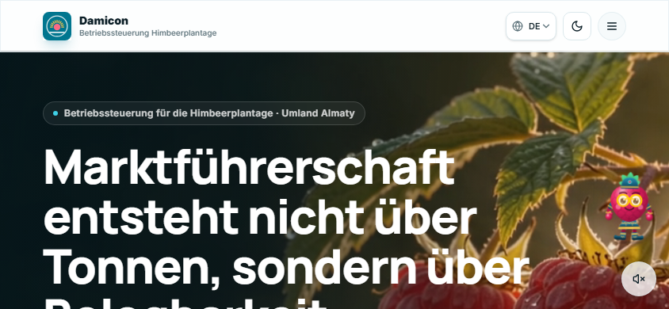
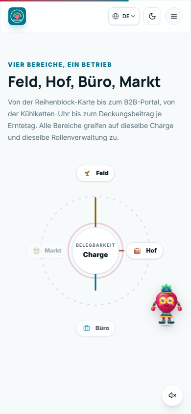
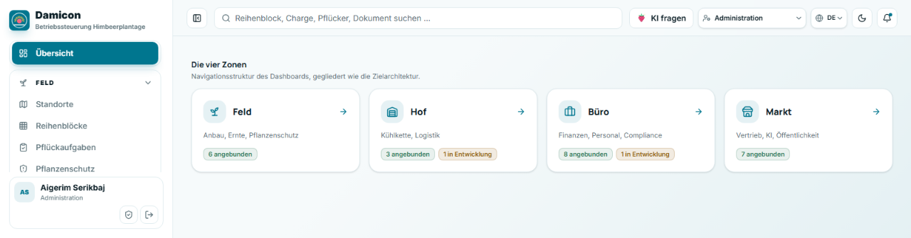
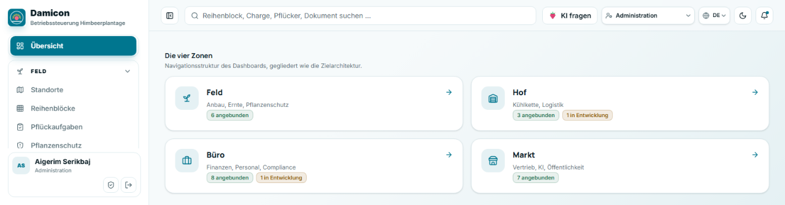
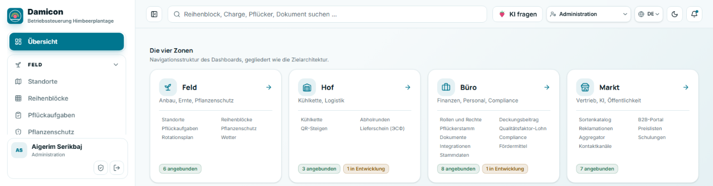
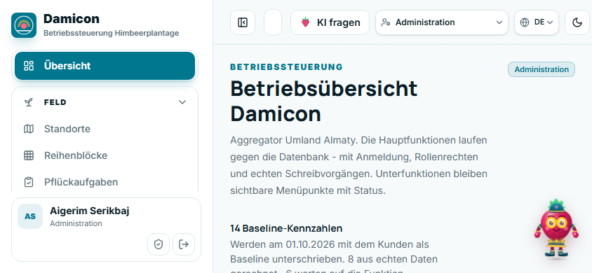

Geprüft wurde die laufende Anwendung im Browser, nicht der Quelltext allein. Jede Zahl unten ist im Dokument gemessen: Elementgrößen über getBoundingClientRect(), Überläufe über scrollWidth gegen clientWidth, Kontraste nach WCAG 2.1 aus den Farbwerten in globals.css gerechnet.
Das ist der Unterschied zu den beiden Vorgängerberichten. docs/ux-audit-portal.md und docs/mobil-audit-portal.md vermerken beide ausdrücklich, dass der Messbrowser auf dem Prüfrechner nicht startete und die Maße aus den Tailwind-Klassen gerechnet wurden. Beide nennen das Querformat als ungeprüft. Genau dort liegen die beiden schwersten Befunde dieses Durchgangs.
Bereich
Fenster
Gerätebezug
Schreibtisch
1440 × 900, 1600 × 1000, 1920 × 1080
Laptop und Arbeitsplatzbildschirm
Handy quer
844 × 390
iPhone 14/15 gedreht, zugleich Tablet hoch und halbes Laptopfenster
Angemeldet als Rolle Administration gegen die gehostete Supabase-Instanz, in Hell und Dunkel.
Nicht geprüft
Ein Durchlauf auf einem echten Gerät, ein Durchlauf mit einem Bildschirmleser, die 26 Module einzeln, Systemschriftgröße über 100 Prozent, Verhalten bei Netzabbruch. Die Kontrastwerte stammen aus den Tokenfarben; wo eine Fläche durchscheinend über Bildmaterial liegt, wurde nicht nachgemessen.
Überblick
Die Spalte Schwere bewertet, was der Befund für den Benutzer bedeutet. Kritisch heißt, eine Funktion ist nicht erreichbar. Hoch heißt, die Aufgabe gelingt, kostet aber unnötig Zeit oder Vertrauen. Mittel und niedrig betreffen Form und Feinschliff.
ID
Befund
Ansicht
Schwere
Aufwand
Stand
PT-Q-01
Bedienelemente der Portal-Kopfzeile werden zwischen 768 und 899 px abgeschnitten
Portal, quer
kritisch
niedrig
offen
PT-Q-02
Rollenumschalter ignoriert seine eigene Ausblendregel
Portal, quer
kritisch
sehr niedrig
offen
PT-D-01
Zonenkarten füllen 44 bis 61 Prozent ihrer Breite
Portal, Schreibtisch
hoch
niedrig
Entwurf liegt vor
PT-Q-04
Seitenleiste belegt im Querformat 36 Prozent der Breite, Markt liegt außerhalb des Fensters
Portal, quer
hoch
mittel
offen
PT-D-07
Globale Suche ohne Funktion (bestätigt)
Portal, alle
hoch
mittel
bekannt, offen
LP-Q-01
Hero ist im Querformat 2,2 mal so hoch wie das Fenster, die Schaltfläche liegt 248 px darunter
Landing, quer
hoch
niedrig
offen
LP-Q-02
„Zum Portal“ erst ab 1024 px sichtbar
Landing, quer
hoch
sehr niedrig
offen
PT-Q-03
Suchfeld schrumpft auf 26 px zu einer leeren Pille
Portal, quer
mittel
niedrig
offen
PT-D-03
Meilensteinkarte A trägt 166 px toten Fuß
Portal, Schreibtisch
mittel
sehr niedrig
offen
PT-D-04
Himbi verdeckt Inhalt in der unteren rechten Ecke
beide, alle
mittel
niedrig
offen
PT-D-05
Trendrichtung der Kennzahl steht allein in der Farbe
Portal, alle
mittel
niedrig
offen
PT-D-06
Herkunft der Kennzahl nur als Maus-Kurzhinweis
Portal, alle
mittel
niedrig
offen
PT-D-08
Glocke ohne Ziel (bestätigt)
Portal, alle
mittel
niedrig
bekannt, offen
PT-H-01
Vier Zonenkarten kosten 860 px Scrollweg für vorhandene Navigation
Portal, hoch
mittel
niedrig
offen
LP-D-01
228 px Leerfläche neben der Überschrift der Zonen-Sektion
Landing, Schreibtisch
mittel
niedrig
offen
LP-H-01
Wortmarke „Damicon“ fehlt auf Geräten unter 420 px
Landing, hoch
mittel
sehr niedrig
offen
LP-H-02
Orbit belegt eine volle Bildschirmhöhe vor dem Inhalt
Landing, hoch
mittel
niedrig
offen
PT-D-02
Zone Hof trug die Schneeflocke der Kühlkette
beide, alle
mittel
sehr niedrig
behoben
LP-D-02
Orbit wiederholt die vier Zonennamen der Karten darunter
Landing, Schreibtisch
niedrig
niedrig
offen
LP-D-03
Ton-Schalter und Himbi teilen sich dieselbe Ecke
Landing, alle
niedrig
sehr niedrig
offen
LP-H-03
Ton-Schalter überlagert die erste Kennzahlkarte des Heros
Landing, hoch
niedrig
sehr niedrig
offen
PT-H-02
Fünf von siebzehn Bedienelementen unter 44 px
Portal, hoch
niedrig
niedrig
Restposten
1 Landingpage
1.1 Schreibtisch
LP-D-01228 px Leerfläche neben der Überschrift der Zonen-Sektion
Die Sektion #zonen legt Text und Orbit in eine Rasterzeile mit items-center. Der Orbit ist 352 px hoch und bestimmt damit die Zeilenhöhe. Der Textblock daneben misst 124 px und steht mittig darin. Über und unter ihm bleiben zusammen 228 px leer, ohne dass dort etwas steht.
Lösungsansatz: Den Orbit auf die Höhe des Textblocks begrenzen oder die Zeile auf items-start stellen und den Orbit optisch an die Überschrift binden. Wer die Fläche behalten will, füllt sie: der Orbit trägt heute vier Beschriftungen und eine Mitte, es wäre Platz für die Zahl der Module je Zone.
LP-D-02Der Orbit wiederholt die Karten darunter
Der Orbit beschriftet Feld, Hof, Büro und Markt. Vierzig Pixel darunter stehen dieselben vier Namen als Karten, diesmal mit Bild, Unterzeile und Verweis. Der Leser bekommt dieselbe Information zweimal hintereinander, die zweite Fassung ist die vollständigere.
Fundstelle: src/components/site/bereichs-orbit.tsx und landing.tsx:120.
Lösungsansatz: Entweder der Orbit übernimmt eine eigene Aussage, etwa dass alle vier Bereiche an derselben Charge hängen, und verzichtet dafür auf die Zonennamen. Oder er entfällt und die Karten rücken nach oben. Die zweite Variante löst LP-D-01 gleich mit.
LP-D-03Ton-Schalter und Himbi teilen sich dieselbe Ecke
Beide Elemente stehen fest unten rechts. Himbi liegt auf z-index: 60, 20 px vom Rand; der Ton-Schalter sitzt darunter. Kommt die Tourblase dazu, ist ein Feld von rund 260 × 300 px dauerhaft durch schwebende Bedienung belegt.
Lösungsansatz: Eine gemeinsame Stapelregel für die untere rechte Ecke, wie sie für die untere Leiste im Portal mit --untere-leiste-raum schon besteht. Der Ton-Schalter gehört näher an das Video, zu dem er gehört, nicht in dieselbe Ecke wie die Figur.
1.2 Handy quer

844 × 390: Zwischen Kopfzeile und unterer Fensterkante steht allein die Überschrift, und die ist nicht zu Ende.
LP-Q-01Der Hero ist im Querformat 2,2 mal so hoch wie das Fenster
Bei 844 × 390 misst der Hero 861 px. Die Überschrift wird mit 60 px gesetzt, weil md:text-6xl nur die Fensterbreite prüft und 844 px über der Grenze liegt. Die Höhe von 390 px spielt dabei keine Rolle. Dazu kommen py-16, also 128 px Innenabstand.
Die Folge: „Prototyp öffnen“ liegt 248 px unter der Fensterkante. Wer das Telefon dreht, sieht eine Überschrift und sonst nichts.
Fundstelle: src/components/site/hero.tsx:43-53. Gemessen: Hero 861 px, h1 252 px bei 60 px Schriftgröße, Schaltfläche bei y = 638.
Lösungsansatz: Die Schriftgröße und den Innenabstand zusätzlich an die Fensterhöhe binden. Tailwind kennt seit v4 die Abfrage über @media (max-height: …); eine Stufe bei 500 px Höhe reicht, um Überschrift und erste Schaltfläche gemeinsam ins Bild zu bekommen. Die bestehende Breitenstaffelung bleibt unverändert.
LP-Q-02„Zum Portal“ ist erst ab 1024 px sichtbar
Die Sprungnavigation und die Schaltfläche ins Portal stehen in einem Block mit lg:flex. Unterhalb von 1024 px übernimmt der Burger. Bei 844 px Breite ist dafür genug Platz: die Kopfzeile trägt dort nur Bildmarke, Sprachwahl, Farbschema und den Burger.
Damit steckt die Handlung, auf die die ganze Seite hinarbeitet, auf Tablets und im Querformat hinter einem zusätzlichen Antippen.
Fundstelle: src/components/site/navbar.tsx:63.
Lösungsansatz: Die Schaltfläche aus dem lg-Block herausnehmen und ab sm dauerhaft zeigen, notfalls verkürzt auf „Portal“. Die Sprungnavigation kann im Burger bleiben, sie ist eine Bequemlichkeit und keine Handlung.
1.3 Handy hoch

390 × 844: Nach Überschrift und Vorspann folgt der Orbit. Die Karten, um die es geht, beginnen erst darunter.
LP-H-01Die Wortmarke fehlt auf Geräten unter 420 px
Der Schriftzug „Damicon“ samt Unterzeile hängt an min-[420px]:flex. Bei 360, 390 und 414 px zeigt die Kopfzeile nur das Bildzeichen. Das betrifft iPhone 12 bis 15 in der Grundgröße und einen großen Teil der Android-Mittelklasse, also die Geräte, auf denen die Seite am häufigsten zuerst geöffnet wird.
Fundstelle: src/components/site/navbar.tsx:41. Gemessen bei 360, 390 und 414 px: display: none.
Lösungsansatz: Den Namen ab 360 px zeigen und stattdessen die Unterzeile „Betriebssteuerung Himbeerplantage“ erst ab 420 px einblenden. Der Name allein ist schmal genug, dass die Kopfzeile ihn auch bei 360 px neben Bildzeichen, Sprachwahl, Farbschema und Burger trägt.
LP-H-02Der Orbit belegt eine volle Bildschirmhöhe vor dem Inhalt
Im Hochformat stapelt sich das Raster. Der Orbit steht dann zwischen Vorspann und Karten und nimmt rund 390 px ein, also die gesamte sichtbare Höhe eines Telefons. Er trägt dort dieselbe Doppelung wie am Schreibtisch, kostet aber einen vollen Wisch.
Lösungsansatz: Auf schmalen Fenstern ausblenden, oder ihn unter die Karten setzen, wo er als Zusammenfassung funktioniert statt als Vorschaltbild.
LP-H-03Der Ton-Schalter überlagert die erste Kennzahlkarte
Bei 390 px liegt der Schalter über der Karte „60 Minuten“, also über der ersten Zahl, die die Seite nennt.
Lösungsansatz: Siehe LP-D-03. Eine gemeinsame Regel für die untere rechte Ecke löst beide Fälle.
2 Portal
2.1 Schreibtisch
PT-D-01Die Zonenkarten füllen 44 bis 61 Prozent ihrer Breite
Bei 1920 px ist jede Karte 376 × 210 px groß. Gemessen an der breitesten Zeile Text füllt Feld 50 Prozent der nutzbaren Breite, Hof und Büro je 61, Markt 44. Die Höhe entsteht aus fünf gestapelten Zeilen: Symbol allein, Titel, Unterzeile, Statuspillen, Verweis. Das Symbol steht auf einer eigenen Zeile und kostet dort 52 px, ohne rechts von ihm etwas zu tragen.
Ist-Zustand bei 1600 px. Rechts neben dem Inhalt bleibt in jeder Karte etwa ein Drittel leer.
Lösungsansatz: Drei Entwürfe wurden im laufenden Programm gebaut und gemessen. Alle drei behalten Verweisziel, Statuspillen und Übersetzungsschlüssel unverändert.
Entwurf
Aufbau
Höhe
Füllung
Raster
A kompakt
Symbol wandert in die Titelzeile, der Verweis wird zum Pfeil am rechten Rand
210 → 134 px
rund 85 %
unverändert
B waagerecht
Symbol links in eigener Spalte, Text daneben
210 → 116 px
rund 90 %
zwei statt vier Spalten
C mit Modulen
Aufbau wie A, dazu die Modulnamen der Zone in zwei Spalten
rund 200 px
rund 95 %
unverändert

Entwurf A

Entwurf B

Entwurf C
Entwurf B löst den Leerraum nach unten auf und schafft ihn nach rechts neu: bei zwei Spalten ist jede Karte rund 490 px breit und trägt weiterhin nur eine kurze Unterzeile. Für diesen Inhalt ist das die schwächste der drei Formen.
Entwurf C ist der einzige, der die Fläche mit Inhalt beantwortet statt mit weniger Fläche, und er beantwortet die Frage, die ein Benutzer vor der Karte tatsächlich hat: was steckt in dieser Zone. Einschränkung: Die Modulnamen stehen innerhalb des Kartenverweises und sind deshalb keine eigenen Ziele. Wer sie einzeln anklickbar will, muss die Karte von einem Verweis in einen Behälter mit mehreren Verweisen umbauen; das berührt die Tastaturbedienung und gehört in einen eigenen Schritt.
PT-D-02Die Zone Hof trug die Schneeflocke der Kühlkette
Die Zone Hof enthält vier Module: Kühlkette, Abholrunden, QR-Steigen und Lieferschein. Das Zonensymbol war eine Schneeflocke und stand damit für eines der vier. Zusätzlich trägt das Modul Kühlkette in derselben Oberfläche thermometer-snowflake, so dass Zone und Modul dasselbe Motiv zeigten.
Fundstelle: src/lib/modules.ts:35.
Umgesetzt: Die Zone trägt jetzt warehouse, ein Gebäude mit Tor. Es steht für den Ort, an dem die vier Module zusammenlaufen, und kollidiert mit keinem Modulsymbol. Der Registereintrag snowflake bleibt, weil ihn der Einarbeitungsschritt zur Kühlkette weiter nutzt.
PT-D-03Die Meilensteinkarte A trägt 166 px toten Fuß
Beide Meilensteinkarten stehen in einem Raster und werden auf dieselbe Höhe gestreckt, 349 px. Karte A hat vier Listenpunkte, Karte B hat sieben und dazu einen Fußtext. Unter dem letzten Punkt von Karte A bleiben 166 px leer.
Fundstelle: src/components/dashboard/home.tsx:258-305. Gemessen bei 1920 px.
Lösungsansatz: Die beiden Karten aus dem streckenden Raster nehmen und in eine Aufteilung setzen, die die natürliche Höhe behält. Alternativ bekommt Karte A denselben abschließenden Fußtext wie Karte B, der dort heute fehlt; inhaltlich wäre er vorhanden, denn Meilenstein A hat eine eigene Abgrenzung.
PT-D-04Himbi verdeckt Inhalt in der unteren rechten Ecke
Die Figur steht fest, 20 px vom Rand, auf z-index: 60, und ist rund 110 px groß. Auf der Übersicht deckt sie den Fußtext der Meilensteinkarte B ab, auf der Landingpage die vierte Zonenkarte. Mit Tourblase wächst die belegte Fläche auf etwa 260 × 300 px.
Lösungsansatz: Auf dem Handy steht die Figur bereits im Knopf der unteren Leiste statt über dem Inhalt, das ist die bessere Lösung. Am Schreibtisch fehlt die Entsprechung. Entweder ein Rand rechts unten im Inhaltsbereich, mit dem die Figur rechnet, oder die Figur wandert auch dort in ein festes Feld der Kopfzeile.
PT-D-05Die Trendrichtung steht allein in der Farbe
Jede Kennzahlkachel trägt oben rechts einen Pfeil. Ob die gezeigte Richtung gut ist, hängt von gutRichtung ab und wird ausschließlich über die Farbe ausgedrückt: grün für günstig, rot für ungünstig, grau für unverändert. Bei der Verlustquote ist ein Pfeil nach unten gut, bei der Pflückleistung schlecht. Ohne Farbunterscheidung ist der Pfeil nicht deutbar.
Das verstößt gegen WCAG 2.1 Erfolgskriterium 1.4.1, das verlangt, dass Farbe nicht das einzige Mittel zur Übermittlung einer Information ist.
Lösungsansatz: Die Bewertung zusätzlich in Text fassen, etwa als title plus sr-only-Text „über Ziel“ oder „unter Ziel“. Wer ohne zusätzlichen Text auskommen will, setzt für den ungünstigen Fall ein anderes Symbol statt einer anderen Farbe.
PT-D-06Die Herkunft der Kennzahl steckt in einem Maus-Kurzhinweis
Unter jeder Kachel steht eine kurze Zeile wie „gerechnet aus 10 Datensätzen“ oder „Funktion fehlt“. Die eigentliche Erklärung, was der Zahl fehlt oder wie sie zustande kommt, liegt im title-Attribut. Dieses Attribut erscheint nur beim Verweilen mit der Maus. Auf dem Telefon und bei Bedienung über die Tastatur ist der Text nicht erreichbar.
Für die Baseline-Unterschrift am 01.10.2026 ist genau dieser Text der wichtige Teil: er sagt, was heute nicht erhoben wird.
Lösungsansatz: Die Erklärung in ein aufklappbares Feld je Kachel legen, oder eine eigene Ansicht „Woher kommen die Zahlen“ mit allen 14 Kennzahlen als Liste. Die zweite Variante ist für das Gespräch mit dem Kunden ohnehin nützlicher als 14 einzelne Kurzhinweise.
PT-D-07Die globale Suche hat weiterhin keine Funktion
Im Kopf steht ein Feld mit Lupe, Rahmen und dem Platzhalter „Reihenblock, Charge, Pflücker, Dokument suchen …“. Dahinter liegt ein div mit einem span, kein Eingabefeld. Der Befund steht als Punkt 1 in docs/ux-audit-portal.md und ist unverändert.
Lösungsansatz: Unverändert wie im Vorgängerbericht. Solange die Suche nicht gebaut ist, ist ein Feld, das wie ein Suchfeld aussieht, schlechter als kein Feld. Der Platz wird für PT-Q-01 ohnehin gebraucht.
PT-D-08Die Glocke hat kein Ziel
Die Schaltfläche trägt einen roten Punkt, der auf ungelesene Meldungen hinweist, und hat keinen onClick. Auf dem Handy ist sie das einzige sichtbare Bedienelement der Kopfzeile neben der Bildmarke. Bestätigt als Punkt 8 aus docs/ux-audit-portal.md.
Lösungsansatz: Entweder ein Meldungsblatt anbinden oder die Glocke entfernen, bis es eines gibt. Der rote Punkt ohne dahinterliegende Meldung ist der störendere Teil: er verspricht etwas Ungelesenes.
2.2 Handy quer und Tablet hoch
Dieser Bereich, 768 bis 899 px Fensterbreite, war in beiden Vorgängerberichten nicht geprüft. Er enthält die beiden kritischen Befunde dieses Durchgangs.

844 × 390: Rechts endet die Kopfzeile mit dem Farbschema-Schalter. Die Glocke steht bei x = 885 und damit außerhalb des Fensters.
PT-Q-01Bedienelemente der Kopfzeile werden abgeschnitten und sind nicht erreichbar
Die Kopfzeile ist eine Reihe ohne Umbruch und ohne Überlauf. Passt der Inhalt nicht, wird er am rechten Rand abgeschnitten. Die Elemente sind dann nicht nur unsichtbar, sondern auch nicht erreichbar: der Kopf hat keinen eigenen Scrollbereich (scrollLeft bleibt 0), und die Seite scrollt nicht waagerecht.
Fensterbreite
abgeschnitten
768 px
Sprachwahl, Farbschema, Glocke
820 px
Farbschema, Glocke
844 px
Glocke
880 px
Glocke
900 px
nichts
Betroffen sind iPad hoch mit 810 px, Telefon quer und jedes Laptopfenster, das auf einer Bildschirmhälfte liegt. Die Sprachwahl ist für eine Oberfläche in fünf Sprachen keine Nebensache, und der Farbschema-Schalter ist die einzige Stelle, an der sich der Dunkelmodus umstellen lässt.
Fundstelle: src/components/dashboard/topbar.tsx:99-196. Gemessen: Kopfzeile scrollWidth 581 gegen clientWidth 540 bei 844 px; rechte Kante der Glocke bei x = 885.
Lösungsansatz: Zuerst PT-Q-02 beheben, das allein gibt rund 198 px frei und räumt den Bereich ab 768 px auf. Zusätzlich sollte die Kopfzeile den Fall selbst abfangen: die Gruppe rechts bekommt min-w-0, und die Elemente, die verschwinden dürfen, bekommen eine klare Reihenfolge. Eine Kopfzeile, die Bedienelemente stillschweigend abschneidet, bleibt sonst eine Falle für die nächste Ergänzung.
PT-Q-02Der Rollenumschalter ignoriert seine eigene Ausblendregel
Die Kopfzeile ruft den Umschalter mit className="hidden lg:inline-flex" auf, er soll also erst ab 1024 px erscheinen. Die Komponente setzt ihre Klassen jedoch über eine Zeichenkette zusammen:
Daraus entsteht die Liste relative inline-flex items-center hidden lg:inline-flex. Welche der beiden Anzeigeregeln gewinnt, entscheidet nicht die Reihenfolge im Attribut, sondern die Reihenfolge im erzeugten Stylesheet. Gemessen bei 844 px: der Umschalter ist sichtbar und 190 px breit. Die Absicht der Kopfzeile greift also an keiner Breite.
Das Projekt hat für genau diesen Fall cn() aus src/lib/utils.ts, das über tailwind-merge widersprüchliche Klassen auflöst. Die Kommentare in globals.css:282-300 beschreiben einen früheren Fall derselben Art. An drei weiteren Stellen wird ebenfalls über Zeichenketten zusammengesetzt (beere-bento.tsx:61, hero-video.tsx:25, loop-clip.tsx:60); dort kollidiert heute nichts, die Stellen bleiben aber anfällig.
Fundstelle: src/components/dashboard/persona.tsx:126, aufgerufen in topbar.tsx:180.
Lösungsansatz: In persona.tsx auf cn() umstellen. Tailwind-merge behält bei zwei Anzeigeklassen die zuletzt übergebene, also hidden, und lässt lg:inline-flex als eigene Variante stehen. Eine Zeile, und der Umschalter verhält sich wie vorgesehen. Die drei übrigen Stellen bei Gelegenheit nachziehen.
PT-Q-03Das Suchfeld schrumpft zu einer leeren Pille
Das Suchfeld ist flex-1 mit min-w-0 und gibt seinen Platz zuerst ab. Gemessen ist es zwischen 768 und 999 px 26 px breit: ein gerahmtes Rechteck ohne Lupe und ohne Text. Bei 1000 px sind es 117 px, der Platzhalter wird noch abgeschnitten; erst bei 1280 px steht er mit 397 px vollständig.
Lösungsansatz: Eine Mindestbreite setzen, unterhalb derer das Feld ganz verschwindet statt zu schrumpfen. Da die Suche ohnehin keine Funktion hat (PT-D-07), ist die kürzere Antwort, das Feld erst ab xl zu zeigen oder bis zur echten Suche zu entfernen.
PT-Q-04Die Seitenleiste belegt im Querformat 36 Prozent der Breite
Die Seitenleiste ist 304 px breit und ab 768 px dauerhaft ausgeklappt. Bei 844 px bleiben für den Inhalt 540 px. Die innere Navigation hat dann 203 px Höhe für 482 px Inhalt; sie ist scrollbar, zeigt das aber nicht an. Der Eintrag „Markt“ liegt bei y = 510 und damit 120 px unterhalb der Fensterkante.
Fundstelle: src/components/dashboard/sidebar.tsx. Gemessen bei 844 × 390.
Lösungsansatz: Die Seitenleiste hat bereits einen Umschalter in der Kopfzeile. Sie sollte bei niedrigen Fenstern eingeklappt starten, nicht ausgeklappt. Zusätzlich braucht der scrollbare Bereich einen sichtbaren Hinweis, etwa einen weichen Verlauf an der Unterkante, solange darunter noch etwas steht.
2.3 Handy hoch
PT-H-01Vier Zonenkarten kosten 860 px Scrollweg
Im Hochformat stapeln sich die Zonenkarten zu je rund 215 px. Vier davon ergeben etwa 860 px, also etwas mehr als eine volle Bildschirmhöhe, für eine Navigation, die die untere Leiste über das Menüblatt bereits bietet.
Lösungsansatz: Entwurf C aus PT-D-01 macht aus dem Scrollweg Inhalt: Die Karten tragen dann die Modulnamen und beantworten damit eine Frage, statt nur zu verweisen. Wer den Weg kürzen will, zeigt die Karten auf dem Handy zweispaltig; bei 390 px Breite bleiben dann rund 170 px je Karte.
PT-H-02Fünf von siebzehn Bedienelementen unter 44 px
Auf der Übersicht bei 390 px Breite liegen fünf der siebzehn bedienbaren Elemente unter 44 × 44 px: die Glocke mit 36 × 36, der Diktatknopf mit 40 × 40, der Sprunglink mit 40 px Höhe, die Bildmarke mit 36 px Höhe und ein Eingabefeld mit 40 px Höhe.
WCAG 2.2 verlangt auf Stufe AA 24 × 24 px; das ist überall erfüllt. Die verbreitete Empfehlung von 44 × 44 px ist es an diesen fünf Stellen nicht. Der Punkt ist ein Restposten zu Punkt 5 aus docs/mobil-audit-portal-2.md, der dort als erledigt geführt wird.
Lösungsansatz: Die Glocke auf h-11 w-11 setzen. Wird sie nach PT-D-08 entfernt, erledigt sich der Punkt. Beim Diktatknopf reicht eine unsichtbare Vergrößerung der Trefferfläche über ::after, damit die Optik erhalten bleibt.
3 Was trägt
Eine reine Mängelliste stellt den Stand falsch dar. Geprüft und in Ordnung:
Geprüft
Ergebnis
Textkontrast hell
Hilfstext 5,22:1 auf Karte und 4,97:1 auf Hintergrund; Markenfarbe 5,27:1; Fließtext 17,1:1
Auf beiden Seiten und in allen zehn gemessenen Breiten keines. Die Kamerafahrt im Kapitelbild ragt rechnerisch über den Rand, wird aber vom Rahmen geschnitten.
Dunkelmodus
Auf Landing und Portal durchgehend umgesetzt, auch in Statuspillen und Kennzahlkacheln
Modulseiten auf dem Handy
Der Inhalt endet über der unteren Leiste, der letzte Absatz ist erreichbar
Einblendungen beim Scrollen
Lösen aus und hinterlassen keinen unsichtbaren Text
Anmeldung und Rollenwechsel
Funktionieren gegen die gehostete Instanz, die Rolle steht in Kopfzeile und Konto-Blatt
Die Kontrastwerte liegen alle über der Anforderung von 4,5:1 für Fließtext. Der niedrigste gemessene Wert, 4,97:1, betrifft den Hilfstext auf der Hintergrundfläche.
4 Umgesetzt in diesem Branch
ID
Änderung
Dateien
Risiko
PT-D-02
Zone Hof trägt warehouse statt snowflake
src/lib/modules.ts, src/components/icon.tsx
keines: reiner Registereintrag, snowflake bleibt für die Einarbeitung erhalten
Das neue Symbol erscheint an allen Stellen, die zone.icon lesen: Zonenkarte im Portal, Zonenkarte auf der Landingpage, Seitenleiste, untere Leiste, Orbit und Modulreiter. Geprüft wurden Portal und Landingpage in Hell und Dunkel.
Der Entwurf zu PT-D-01 liegt als Vergleich vor und wartet auf die Entscheidung zwischen A, B und C.
5 Vorgeschlagene Reihenfolge
Schritt
Befunde
Warum zuerst
1
PT-Q-02, dann PT-Q-01
Eine Zeile behebt den ersten kritischen Befund und gibt rund 198 px in der Kopfzeile frei. Ohne diesen Schritt fehlen auf Tablets Sprachwahl und Dunkelmodus.
2
PT-D-01
Der Auslöser dieses Durchgangs. Entwurf liegt vor, betrifft eine Datei.
3
LP-Q-02, LP-H-01
Zwei Breakpoints. Beide betreffen den ersten Eindruck: Markenname und der Weg ins Portal.
4
LP-Q-01
Braucht eine Höhenstaffelung, die es im Projekt noch nicht gibt. Einmal eingeführt, ist sie für alle Sektionen nutzbar.
5
PT-Q-04, PT-Q-03
Räumt den Bereich zwischen 768 und 1024 px vollständig auf.
6
PT-D-03, PT-D-04, LP-D-01, LP-D-03, LP-H-03
Flächen und Überlagerungen. Sichtbar, aber nichts davon blockiert eine Aufgabe.
7
PT-D-05, PT-D-06, PT-H-02
Zugänglichkeit. PT-D-06 lohnt vor dem 01.10.2026, weil dort die Herkunft der Kennzahlen zur Sprache kommt.
8
PT-D-07, PT-D-08
Zwei Attrappen. Die Entscheidung ist nicht gestalterisch, sondern inhaltlich: bauen oder entfernen.
Was die Änderungen nicht berühren dürfen
Alle Lösungsansätze oben sind so geschnitten, dass sie Darstellung ändern und Verhalten unverändert lassen. Unberührt bleiben: Verweisziele und Routen, die Rechteprüfung über hasPermission, die Zählung der Module je Zone und Reifegrad, die Übersetzungsschlüssel, die Datenabfragen und die Schreibvorgänge. Wo ein Ansatz das nicht einhalten kann, steht es beim Befund: Entwurf C macht aus den Modulnamen keine eigenen Verweise, und PT-D-07 sowie PT-D-08 verlangen eine inhaltliche Entscheidung, bevor an der Oberfläche etwas passiert.